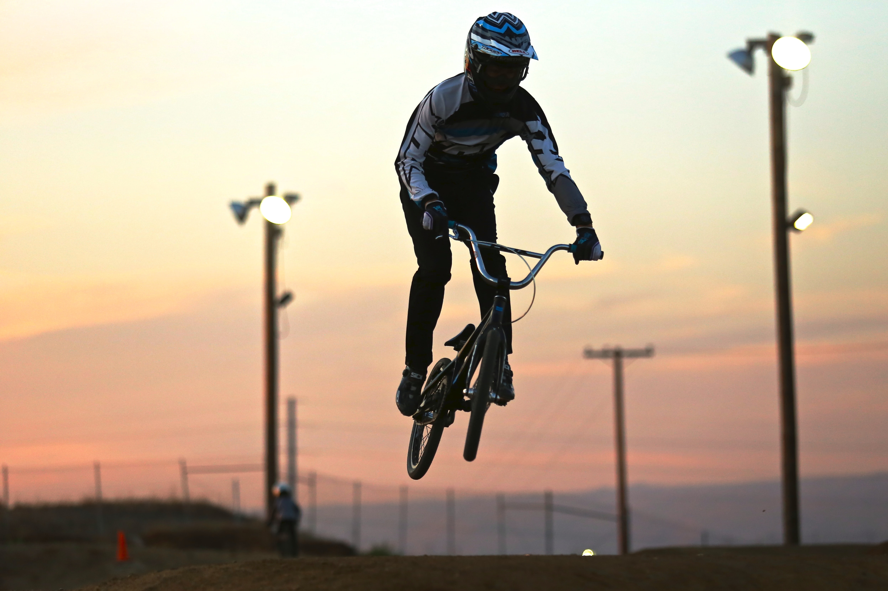
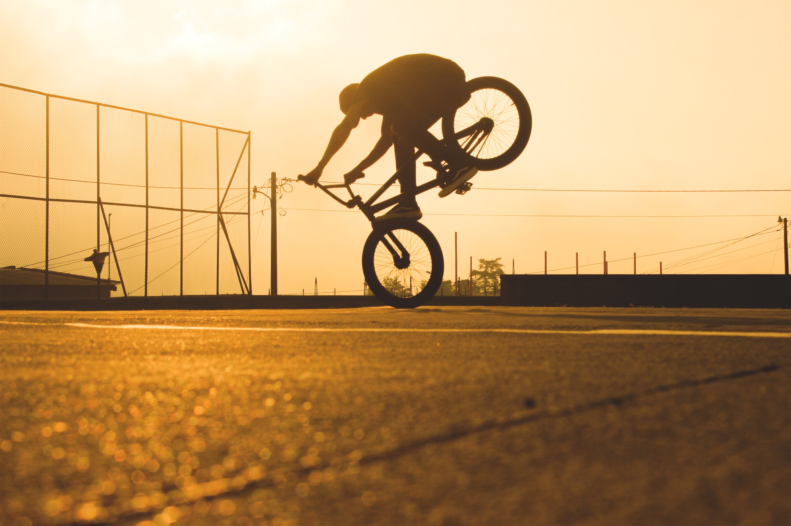
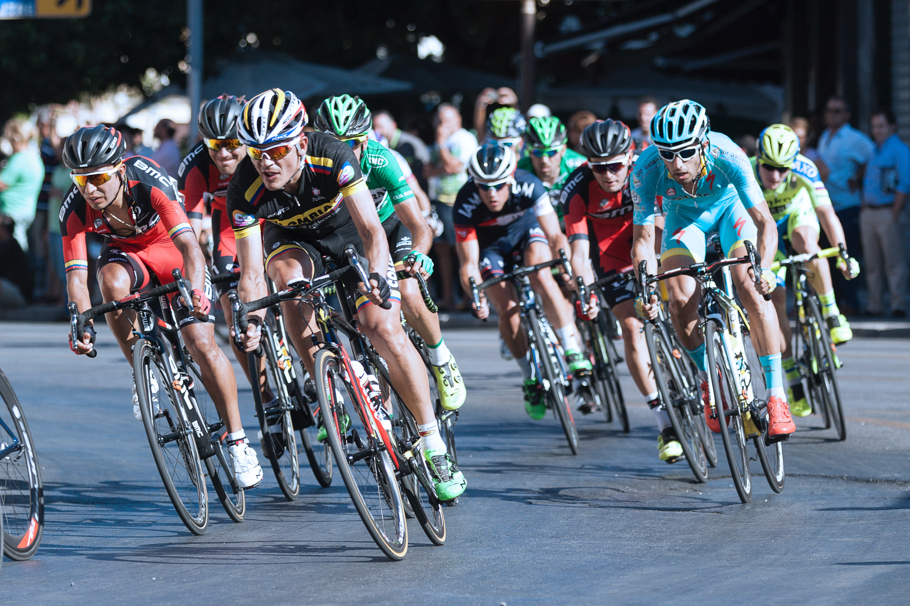

Mesmo com a primeira bicicleta ter sido criada a mais de 200 anos.
O ciclismo começou como esporte, na Inglaterra durante o século XIX.
A primeira grande prova de ciclismo foi realizada em 1869 com uma distância de 123km.
O ciclismo participou em 1896 na estréia dos jogos olímpicos da era moderna.
CICLISMO NO BRASIL
Com as ondas imigratórias de pessoas vindas da Europa em crise em meados do inicio do século XX, ocorreu a chegada das bicicletas no Brasil.
Logo as bicicletas se tornaram tão populares que os primeiros clubes e competições começaram a surgir.
Por exemplo o Velódromo Rio-Grandense, sediou a primeira competição em pista oficial do país em 1898, mesmo ano em que a Caloi abria suas portas em São Paulo.
MODALIDADES
Atualmente, nos Jogos Olímpicos, existem 5 modalidades do ciclismo: BMX, BMX Freestyle, Ciclismo de Estrada, Mountain Bike e Ciclismo de Pista.
BMX
BMX é a sigla de Bicycle MotoCross. O BMX nasceu da paixão de jovens norte-americanos pelo motocross. Como não tinham um equipamento adequado, eles acabavam imitando as manobras usando bicicletas em pistas de terra.
Em 1981, nasceu a Federação Internacional de BMX. Um ano depois ocorreu o primeiro campeonato mundial da categoria que foi disputado em Dayton, nos Estados Unidos.


BMX FREESTYLE
É a modalidade mais recentes que participará pela primeira vez nos Jogos de Tóquio. Apesar disso, essa modalidade de BMX é disputada desde 1970.
Também com uma bike de aro 20”, os atletas devem executar uma série de manobras, com giros e saltos no ar.
CICLISMO DE ESTRADA
Primeira modalidade a ser disputada dentro do ciclismo. As bikes de estrada são mais leves, com guidão mais baixo e pneus fininhos.
Nos Jogos Olímpicos, as provas de ciclismo de estrada são individuais e vence quem cruzar a linha de chegada em primeiro.
Além dos Jogos Olímpicos, existem outras provas conhecidas como a Volta da Espanha, o Giro D’Itália e o Tour de France.

MOUNTAIN BIKE
Disputado nos Jogos Olímpicos desde 1996. Nas Olímpiadas, são disputadas provas de cross-country com múltiplas voltas. O primeiro ciclista que completar todas as voltas e cruzar a linha de chegada, é o vencedor.
Em média, as provas têm duração de 1h30 a 2 horas. A bike dessa modalidade tem pneus mais largos, amortecedores traseiros e dianteiros e material resistente à impacto.
CICLISMO DE PISTA
Modalidade que surgiu diretamente do ciclismo de estrada. Ela é realizada em pistas exclusivas para a disputa, os velódromos.
As bikes são bem diferentes e não possuem freios, além de contar com apenas uma marcha. Nessa modalidade, os ciclistas atingem altíssimas velocidades — e se tivesse freio nas bikes poderia causar acidentes. Caso haja necessidade de reduzir a velocidade, o ciclista deverá pedalar para trás.